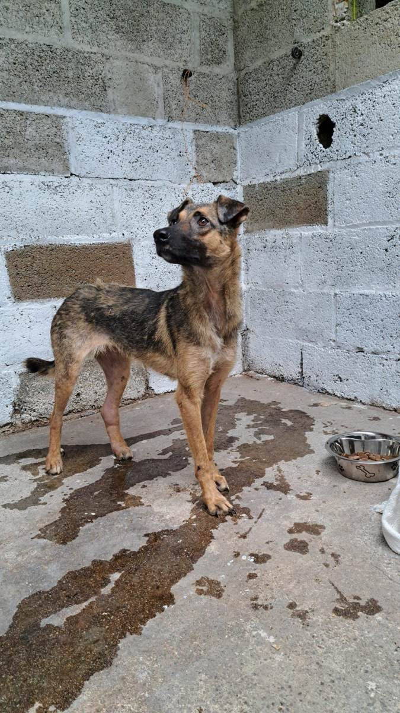
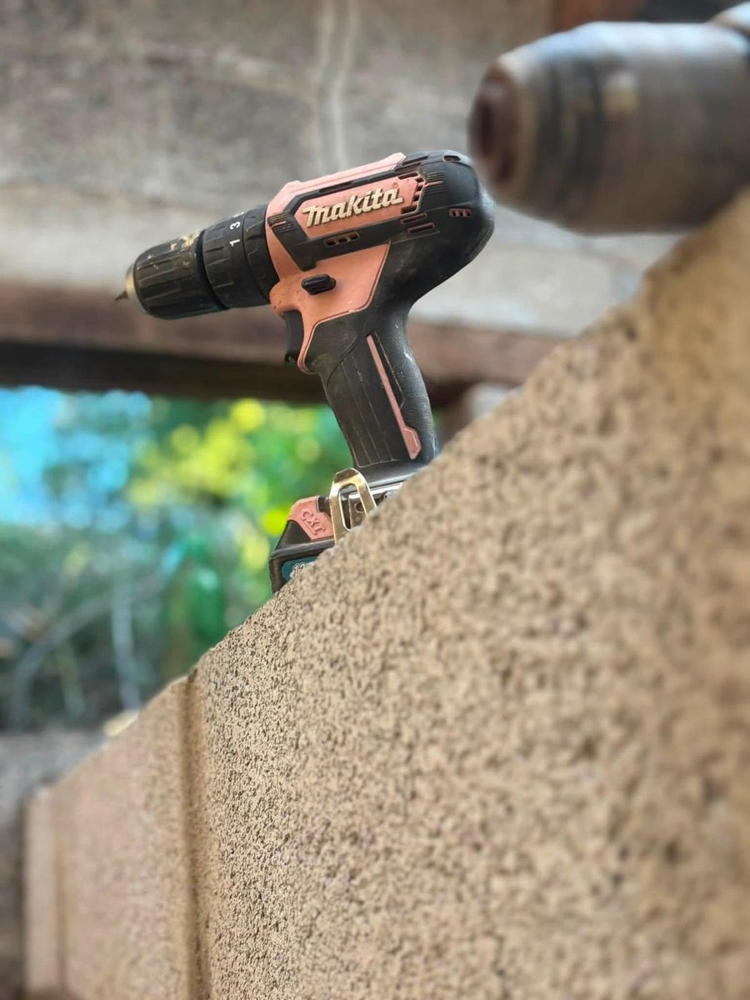
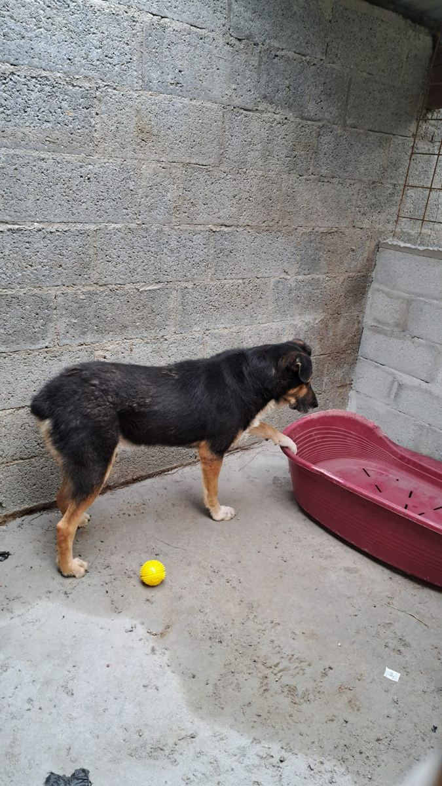
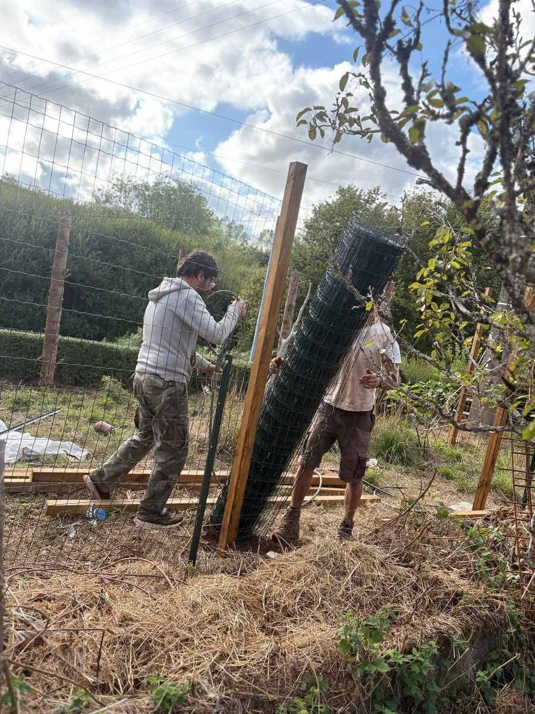

Un lieu de un hectare et demi en Bretagne, pensé pour le sauvetage, le soin et la reconstruction, pour les chiens, et pour les humains qui les entourent.
Un endroit pensé autrement, pour les chiens comme pour les humains qui gravitent autour d'eux.

Des chiens abandonnés, oubliés ou condamnés ailleurs, à qui nous offrons du temps, de l'espace et une vraie seconde chance.
En savoir plus
Des bénévoles isolés ou en situation de handicap trouvent ici un endroit où se rendre utiles, entourés d'animaux et de nature.
En savoir plus
Dons, matériel, temps ou compétences : chaque petit geste nous aide à construire quelque chose de beaucoup plus grand.
En savoir plusLe projet avance chantier après chantier, venez voir où ça en est.




En pleine campagne des Côtes-d'Armor, entre Callac et Guingamp, le lieu où tout ce que vous voyez sur cette page prend racine.
Rencontrez les chiens qui attendent leur famille, ou découvrez comment nous soutenir, chaque geste compte.